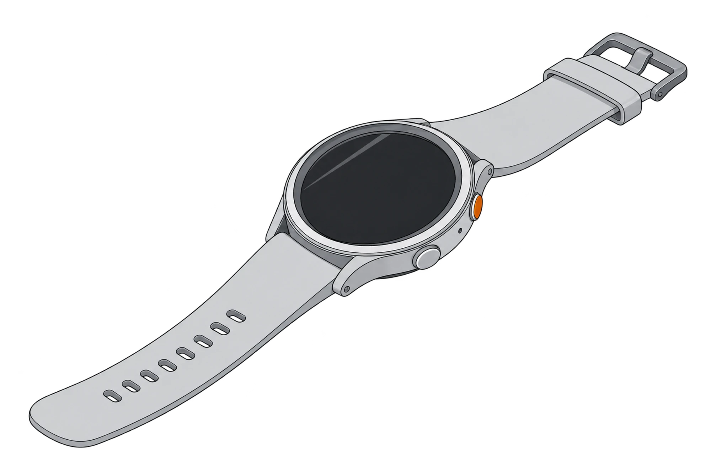
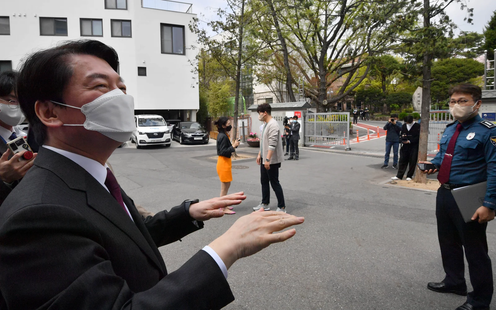

SOS 버튼
- 기능
- SOS 버튼을 누르면 112에 긴급 신고하고 위치를 전송한다.
- 조건·사례
- 긴급 신고는 사용자가 직접 버튼을 눌러야 접수된다. 버튼을 누르기 어려운 상황에서는 신고 기능을 이용할 수 없다.

편집# 015 · 신변보호 스마트워치
신변보호 스마트워치, 지급 이후의 점검
생성형 AI 개념 일러스트
2026년 10월 11일 서울 송파, 12일 제주.
송파에서 가정폭력 피해 여성이 납치되고 그의 어머니가 숨졌다. 다음 날 제주에서는 신변보호를 받던 여성이 전 연인에게 살해됐다.
두 여성 모두 경찰이 지급한 스마트워치를 갖고 있었다. 경찰 설명에 따르면 송파 피해자의 워치는 방전돼 있었고, 제주에서는 피의자가 피해자의 워치를 손으로 뜯어냈다. 두 사건 모두 워치를 통한 긴급 신고는 이뤄지지 못했다.
경찰은 워치의 작동 여부를 전산으로 확인할 수 있었다.
01 · 긴급 신고와 출동
경찰은 2015년 10월 신변보호용 스마트워치를 도입했다. 2025년 지급 건수는 2만1974건이다. 휴대전화 없이도 워치의 SOS 버튼으로 신고하고 위치를 보낼 수 있다.
출동 원칙은 2021년 11월 경찰 지침 기준

02 · 워치의 기능과 사용 조건
지급 이후의 관리
경찰은 내부 전산 시스템에서 워치의 작동 여부를 확인할 수 있었다. 그러나 전산 확인은 주로 기기 관리에 쓰였고, 실제 사용 여부를 점검하도록 의무화하지는 않았다.
현행 매뉴얼은 담당 수사관이 일주일에 한 번 피해자에게 연락해 사용 여부를 확인하도록 한다. 피해자의 답변에 의존하는 확인과 기기의 전원 상태를 직접 보는 점검 사이에 차이가 있었다.
자료: 뉴시스 2026. 10. 13 경찰청 설명. 주 1회 연락 확인은 기존 매뉴얼에 있던 절차다.
03 · 송파 사건의 날짜
송파 사건의 피해자에게는 스마트워치가 지급돼 있었다. 가해자에 대한 접근금지 등 임시조치는 9월 30일 끝났고, 경찰은 10월 6일 다시 신청했다. 법원 결정을 기다리던 중 11일 사건이 발생했다. 범행 당시 워치는 작동하지 않았다.
접근금지 등 임시조치 만료
임시조치 재신청
사건
자료: 뉴시스 10월 12일·13일 보도. 날짜 간격은 일수에 비례한다.
경기남부경찰청은 13일 앞서 가정폭력 혐의를 수사한 수원권선경찰서에 대한 감찰에 착수했다. 수사와 피해자 보호 조치가 적정했는지 살펴볼 방침이다. 유족은 14일 취재진에게, 앞서 경찰에 적극적인 조치를 요구했지만 기다리라는 답만 들었다고 주장했다. 피의자는 13일 구속됐다.
04 · 숫자로 보는 스마트워치
단위: 건. 2022년은 동일 기준 자료를 확보하지 못해 수치를 표시하지 않았다. 2026년 1~8월 수치는 보도 간 차이가 있어 원자료 확인 전까지 제외했다. 자료: 경찰청(2022 경찰백서, 김예지 의원실 제출 자료·헤럴드경제)
피해 집계에는 올해 10월 송파·제주 사건이 포함되지 않는다. 지급 건수와 피해 건수의 집계 기간이 달라 예방 효과를 산출하는 비율로 사용할 수 없다.
05 · 과거 신변보호 사건
위치 오차, 신고 뒤 출동, 가족의 보호 범위, 기기 반납. 과거 사건에서도 서로 다른 보호 문제가 드러났다.
김병찬에게 살해된 여성은 경찰이 지급한 워치로 두 차례 긴급 호출했다. 당시 뉴시스 보도에 따르면 경찰은 처음에 피해자의 집에서 수백m 떨어진 곳으로 출동했고, 첫 신고를 접수한 지 12분 만에 집에서 피해자를 발견했다. 경찰은 기지국 중심의 위치 확인 방식에서 오차가 발생했다고 설명했다.
이석준 사건에서는 신변보호 대상 여성에게 워치가 지급돼 있었다. 여성의 집에 있던 어머니가 숨지고 동생이 다쳤다. 워치가 지급된 당사자와 실제 피해를 입은 가족이 다른 사건이다.
출처: 경향신문 · 2021. 12. 15 가족 보호 조치 보도
신변보호를 받던 여성은 지급받은 워치로 긴급 신고했다. 당시 뉴시스 보도는 경찰이 신고 3분 뒤 현장에 출동했지만 피해자가 숨졌다고 전했다. 워치 신고는 접수됐으나 피해를 막지 못한 사건이다.
스토킹 피해 여성은 7월 13일 워치를 반납했고, 나흘 뒤 전 연인에게 살해됐다. 반납 경위에 대해서는 유족이 경찰의 요청이 있었다고 주장한 반면, 경찰은 요청한 적이 없다고 밝혔다. 사건 당시에는 워치를 반납한 상태였다.
출처: 동아일보 · 2023. 9. 11 반납 시점과 양측 설명. 뉴시스 · 2023. 10. 19 국정감사의 반납 경위 질의와 경찰 답변
06 · 스토킹 가해자 전자장치
피해자의 신고를 받는 워치와 별도로, 가해자의 접근을 감시하는 위치추적 전자장치도 운용된다. 스토킹 가해자에 대한 부착은 법원의 잠정조치 결정으로 이뤄진다.
862건 경찰 신청 37.2% 법원 인용률
2025년 스토킹 잠정조치 3호의2에 대한 경찰 신청과 법원 인용률. 자료: 박은정 의원실 제출 경찰청 자료·뉴시스.
이 통계는 스토킹 사건에 대한 잠정조치 신청이다. 송파 가정폭력 사건에 적용된 임시조치와는 구분된다.
07 · 무엇이 바뀌나
경찰청 국가수사본부는 13일 시·도경찰청에 전수점검 공문을 보냈다. 수사 중인 사건, 모니터링 A등급 대상자, 스마트워치 지급 등 안전조치가 진행 중인 건을 점검한다. 워치 제공 여부와 기기 오작동 여부도 확인할 예정이다.
경찰청은 피해자전담경찰관의 주기적 전산 점검을 추진 중이다. 워치 전원이 일주일가량 꺼져 있으면 담당자에게 알려 피해자의 안전과 기기 사용 여부를 확인하는 방안도 검토한다. 시행이 확정된 제도는 아니다.
경찰과 법무부는 전자장치를 부착한 스토킹 가해자의 접근·장치 훼손 경보를 112에 자동 접수하는 연계 시스템을 구축 중이다. 구축 완료 계획은 2026년 12월이다.
가정폭력 임시조치에 전자장치 부착을 추가하는 법률 개정안도 발의됐다. 현행 제도와 향후 계획은 자료 영역에 구분해 표시했다.
담당자에게 알림이 전달된 뒤에는 피해자의 안전 확인과 후속 조치가 이어져야 한다.
2026 국정감사
13일 경기남·북부경찰청 국정감사에서는 고위험 사건에서 가해자 유치 등 적극적인 조치가 필요하다는 요구가 나왔다. 경찰은 더 적극적으로 조치하겠다는 취지로 답했다.
워치 전원 점검과 접근금지 갱신은 담당자가 실제로 이행했는지 확인해야 한다. 19일부터 시작될 전수점검이 어떤 후속 조치로 이어지는지도 지켜볼 일이다.
13일 경기남·북부경찰청 국정감사 질의·답변: 뉴시스 10월 13일 보도. 아래 의견은 국정감사에 자동 접수되지 않습니다.
독자 의견 · 선택 참여
기기 사용과 점검, 경찰의 대응에서 개선이 필요한 점을 적어주세요.
이 기사에서는 의견을 수집·저장하지 않습니다. 복사한 의견은 국민신문고에서 경찰청 소관 민원·제안으로 직접 제출할 수 있습니다. 이동만으로 의견이 전송되지는 않습니다. 긴급 신고는 112.
도움이 필요하다면
보도 확인: 2026년 10월 14일 오후 2시 42분 기준. 분해도는 기능 개념도이며 실제 지급 기기의 내부 구조를 재현한 것이 아니다. 대표 일러스트는 생성형 AI로 제작했다. 그래프는 공개 자료를 바탕으로 그렸다. 2026년 10월 사건은 수사 중이며, 당시 경찰 설명을 인용한 보도를 바탕으로 작성했다. 과거 사건의 출동·반납 경위도 각 보도 시점의 설명이다.